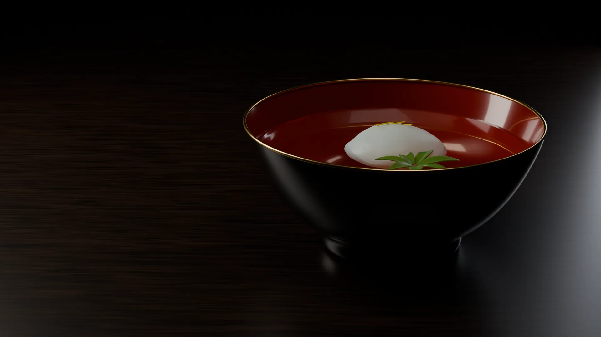
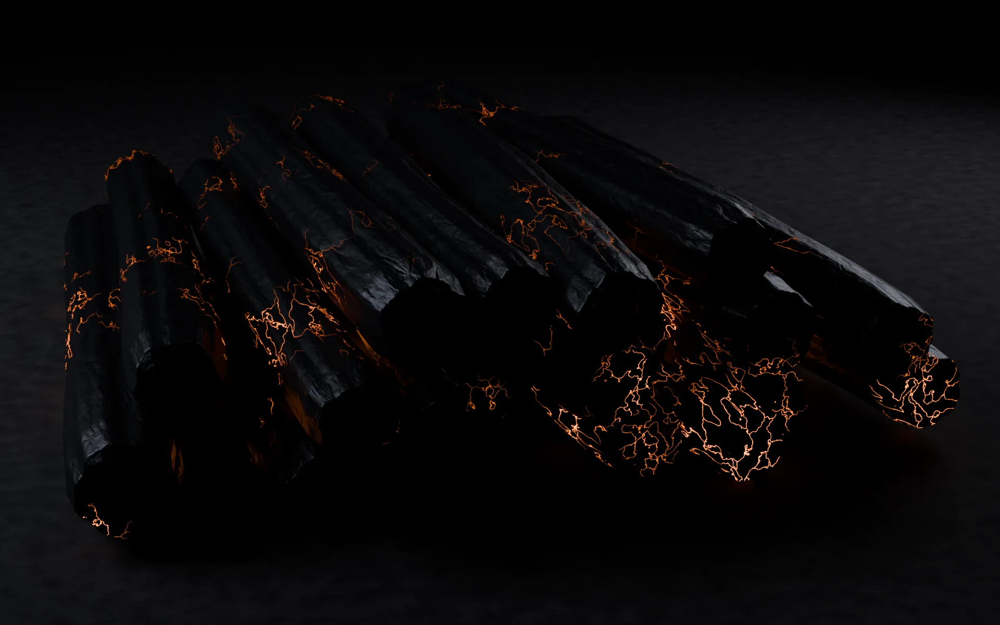
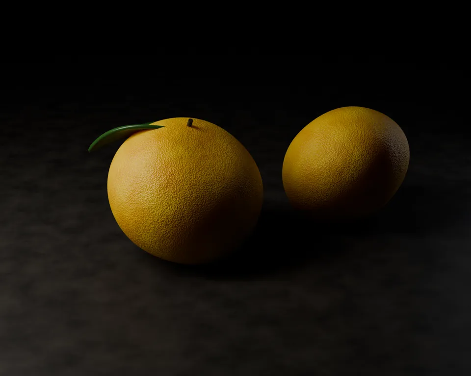
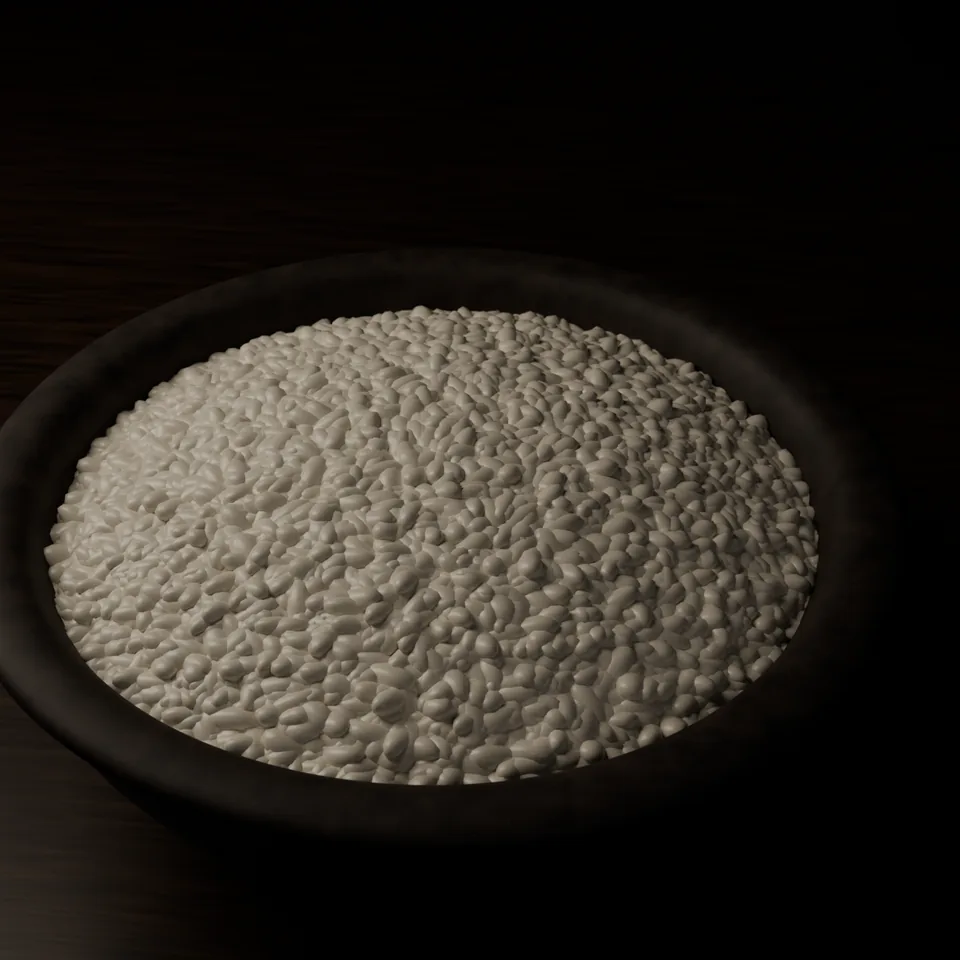
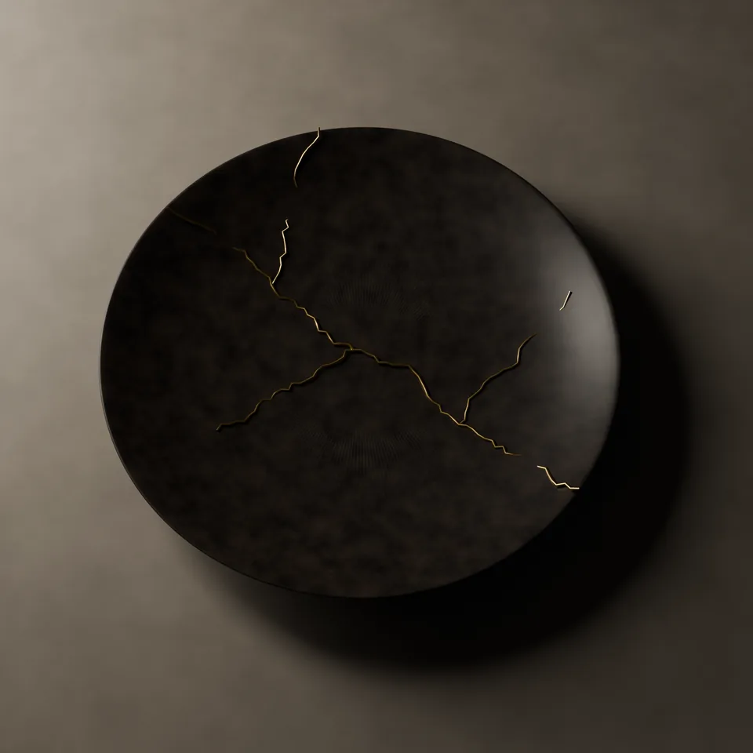
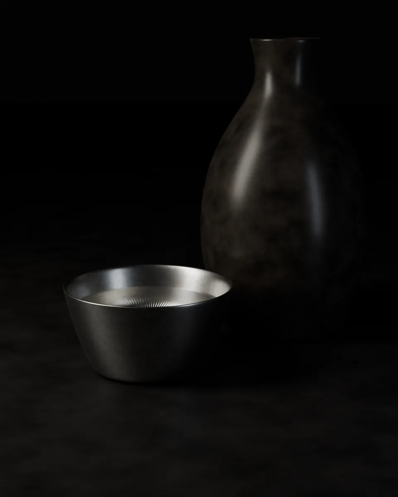
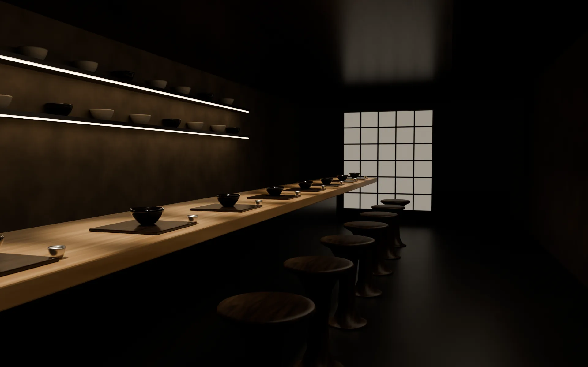

五日
暦の料理
立冬 初候
山茶始開
つばきはじめてひらく
一年を、
七十二に分けて
料理する。
昔の暦は、一年をおよそ五日ずつ、七十二の季節に分けました。「蛙が鳴き始める」「霜が降り始める」。名前はどれも、その五日に外で起きることです。
五日では、椀を必ず替えます。節気が変わる十五日ごとに、献立をすべて組み直します。同じ献立は一年に一度しかありません。
- 先付柿 白和え
- 椀蟹真薯 青菜 柚子
- 向付平目 昆布締め
- 焼物甘鯛 炭焼
- 炊合海老芋 金時人参
- 強肴香箱蟹 土佐酢
- 御飯新米 白飯
- 水菓子柚子 葛寄せ

焼く
焼物は備長炭だけで火を入れます。炎が消え、炭の内側が赤くなってから魚を置きます。

香る
香りは椀を開ける時の一度きりです。柚子はお客様の前でおろします。

炊く
御飯は席ごとの土鍋で炊きます。最初の一口は、おかずなしでどうぞ。

繕う
割れた器は金で継ぎ、また使います。器にも、それぞれの時間があります。

五日という長さは、料理人には短く、季節には十分です。
市場の魚が替わり、山の匂いが変わり、
昨日は硬かった蕪が今日はやわらかい。
私はそれを追いかけているだけです。
今夜の皿は、次の五日には作りません。
だからこの店は、いつか、また来てください。
水無瀬 朔

- 席
- 八席檜の一枚板のカウンターのみ
- 開始
- 十八時三十分全員が同時に始めます
- お料理
- 38,000円税・サービス料込み
- 定休
- 日曜 月曜夜のみの営業です
ご予約は、
毎月一日の正午から。
翌々月までの席をお受けします。日にちを選ぶと、その日の椀が分かります。
席を予約する